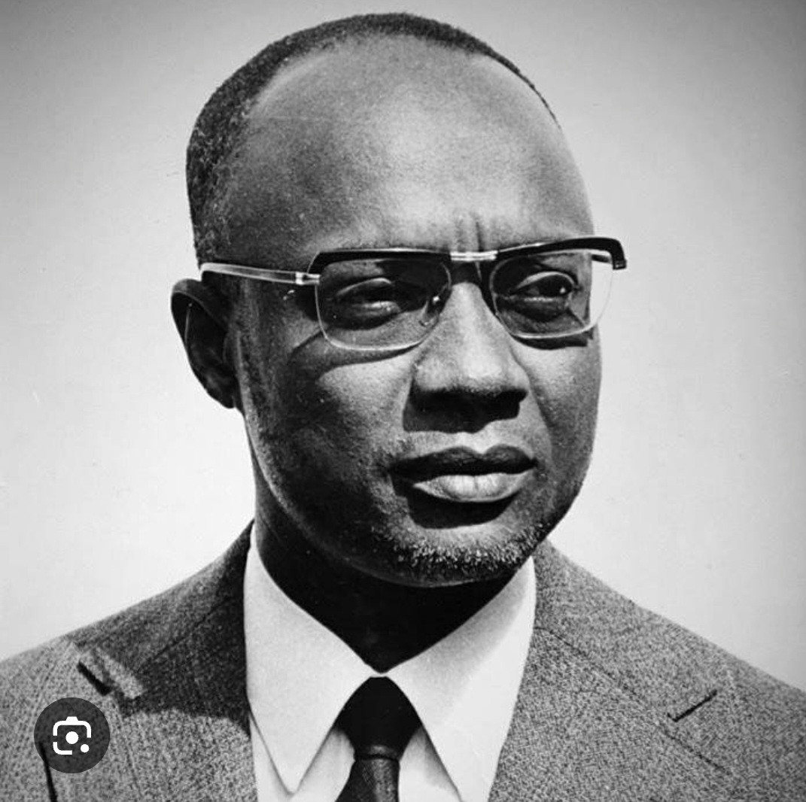
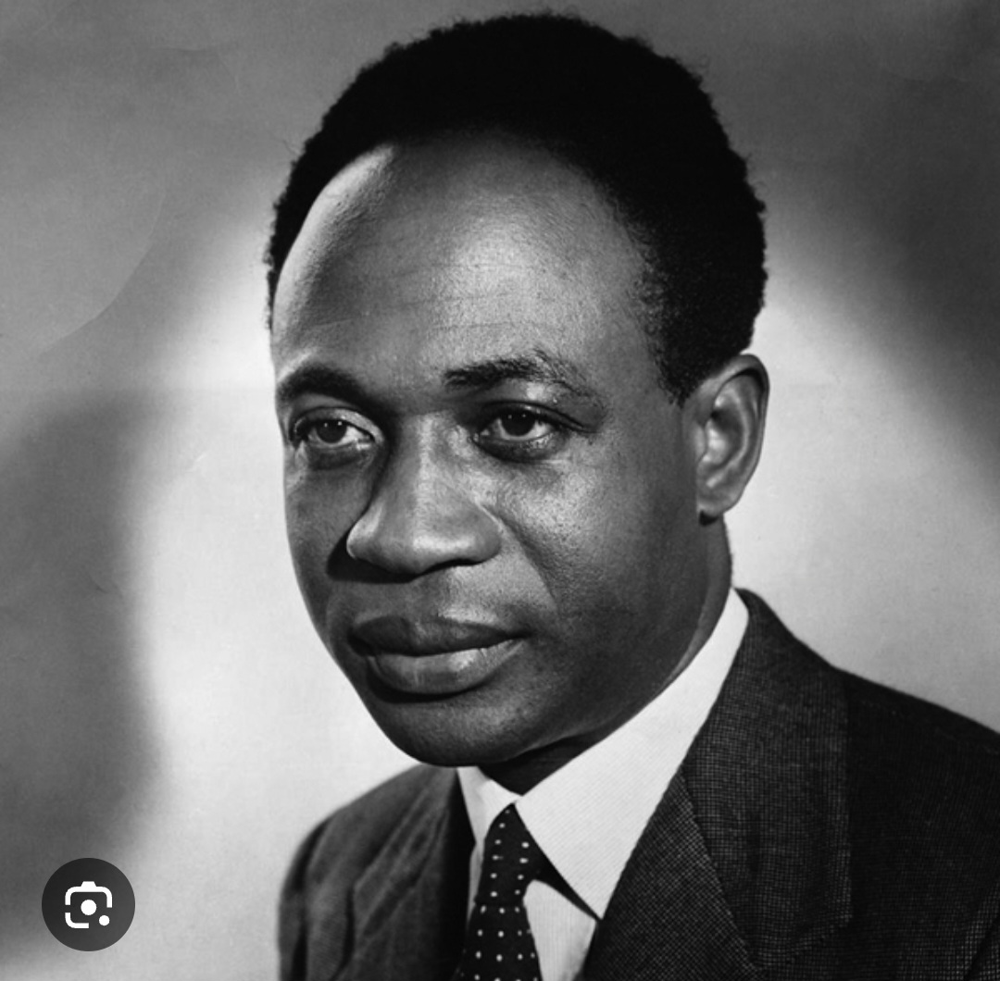

África mama(bu fidjus na tchorau lendas), conheça os Heróis e Líderes que fizeram o mundo bater as palmas dos seus pensamentos alem dos horizontes.

Amilcar Cabral foi um dos maiores e mais críticos pensadores do século XX. O seu pensamento crítoco expredda-se de dois modos. Sentido de renuncia á condição de subalternidade e de dependência a que o colonialosmo Português o tinha votado, a ele e ao seu povo, enquento colonizados.

Kwame Nkrumah(nacido em Setembor de 1909, Nkrofu, Gold Coast[agora Gana]- falecedo a 27 de abril de 1972, Bucareste, Roménio) foi um lider nacionalista ganês que liderou o esforço da costa do Ouro pela independência da Grã-Bertanha e presidio ao seu surgimento como a nova nação do Gana. Lideru o país desde a independência em 1957 até ser deposto por golpe em 1966.